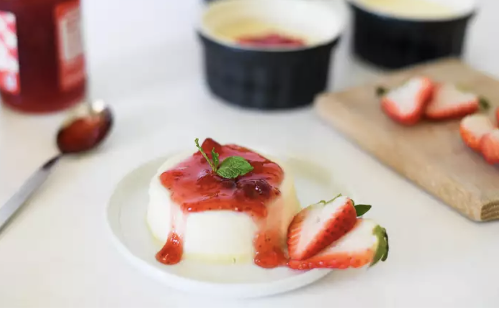
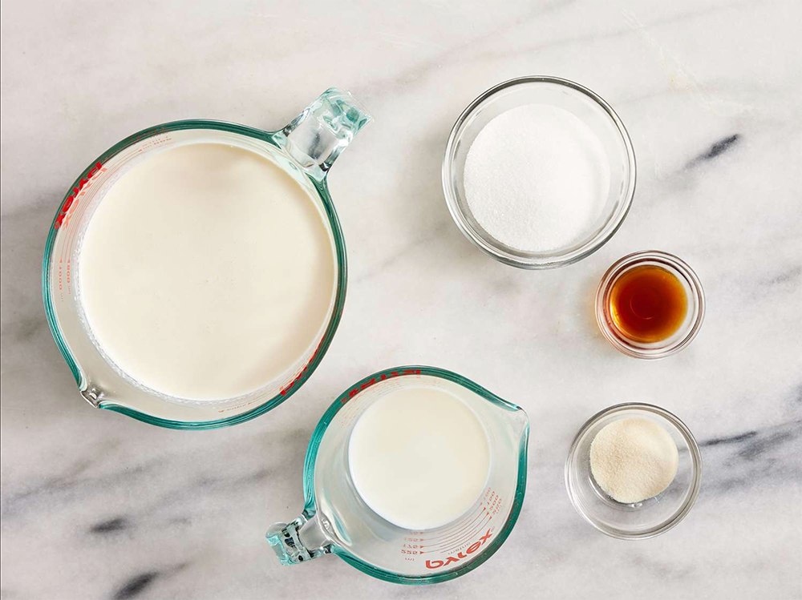
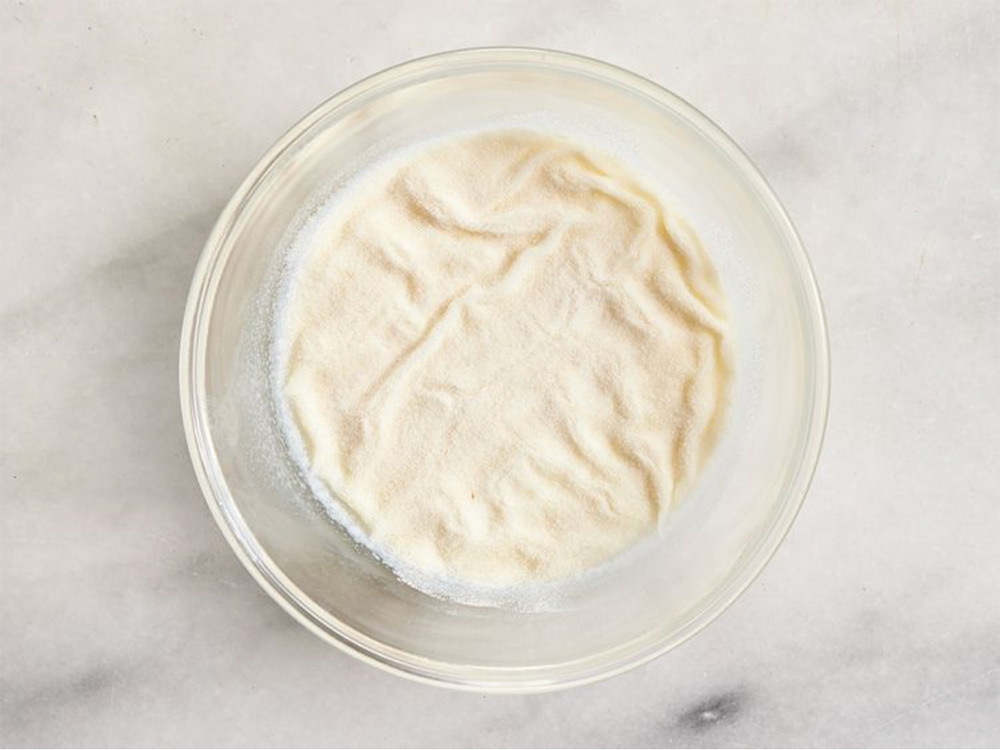
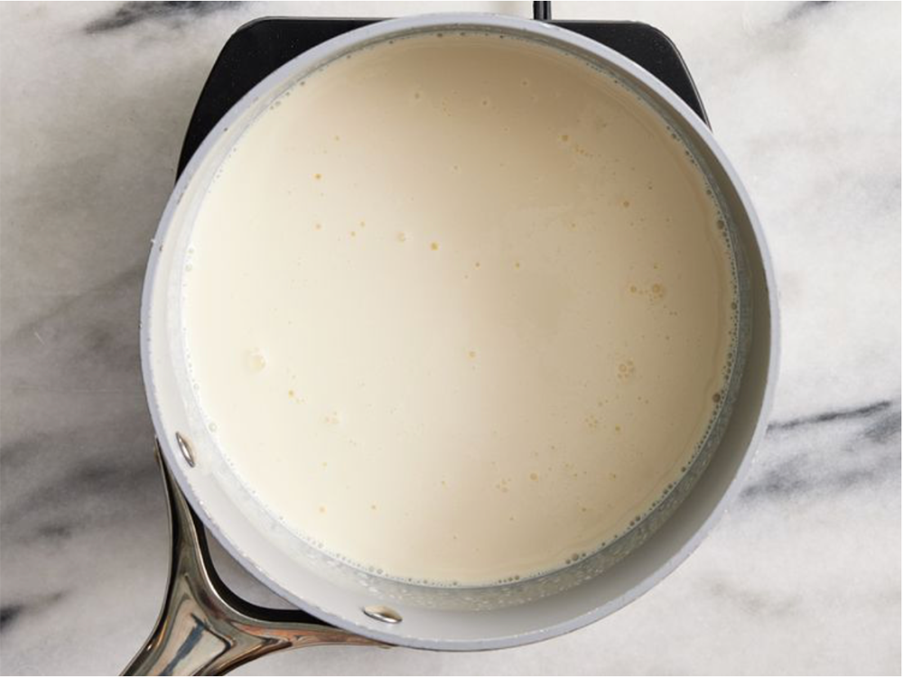
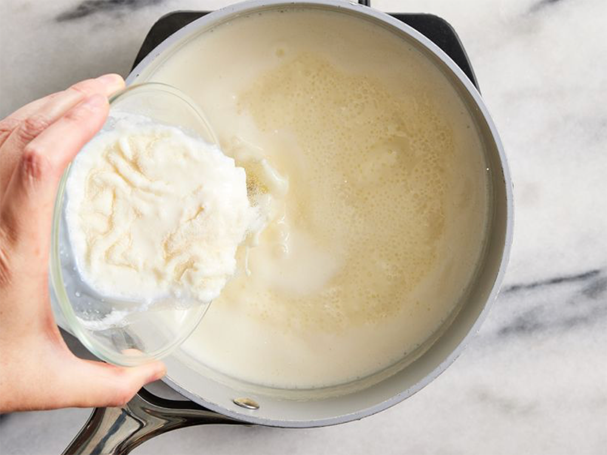
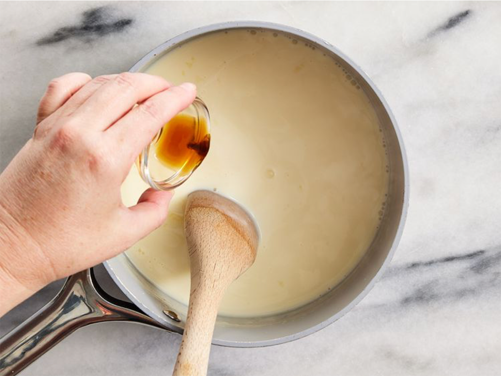
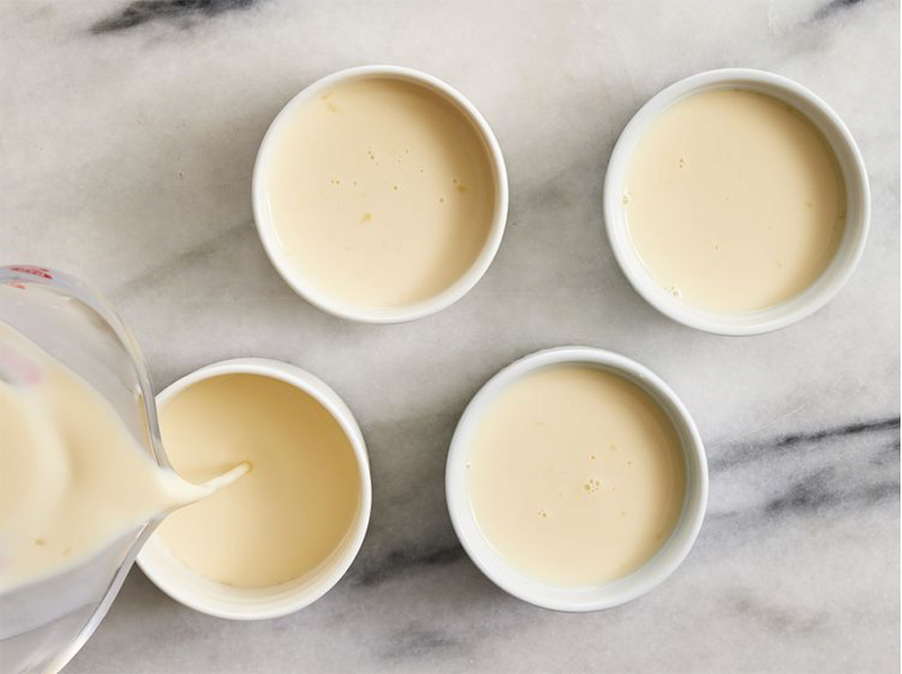
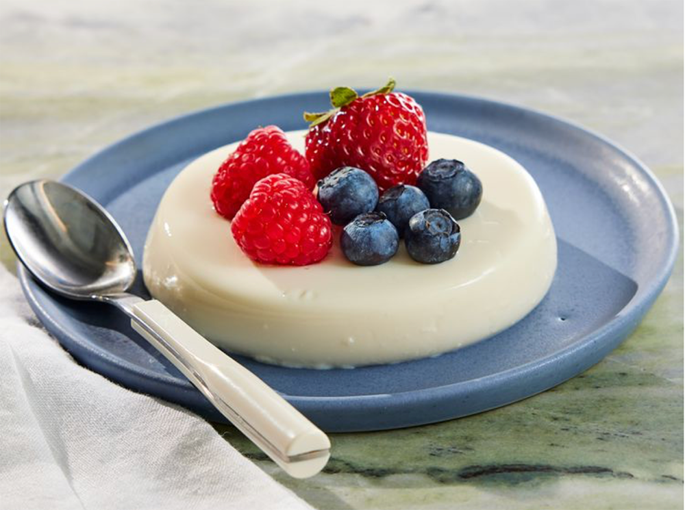

Content for Panna Cotta Recipe
Link to reference recipe!
Panna cotta is a traditional, easy, and delicious Italian custard. It's my favorite dessert, and it feels light and refreshing.

this recipe serves 6
DIETARY RESTRICTIONS
Prep and Cook Time:
- Prep: 5 mins
- Cook: 10 mins
- Additional: Refrigerate at least 4hr 20min
Ingredients
- ⅓ cup skim milk
- 1 (0.25 ounce) envelope unflavored gelatin
- 2 ½ cups heavy cream
- ½ cup white sugar
- 1 ½ teaspoons vanilla extract
- fresh berries for garnish if you so wish
Directions
- gather all ingredients

- Pour milk into a small bowl. Sprinkle gelatin powder over milk and stir until combined. Set aside.

- Stir heavy cream and sugar together in a saucepan. Set over medium heat and bring to a boil; watch carefully as the cream can quickly bubble up and boil over.

- Immediately stir gelatin mixture into boiling cream, stirring until completely dissolved. Cook and stir for 1 minute.

- Remove the pan from the heat and stir in vanilla.

- Pour cream mixture into 6 individual ramekins. Leave to cool, uncovered, until no longer warm, about 20 minutes.

- When cool, cover with plastic wrap. Refrigerate until set, at least 4 hours but preferably overnight.
